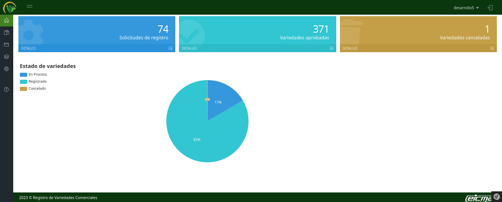
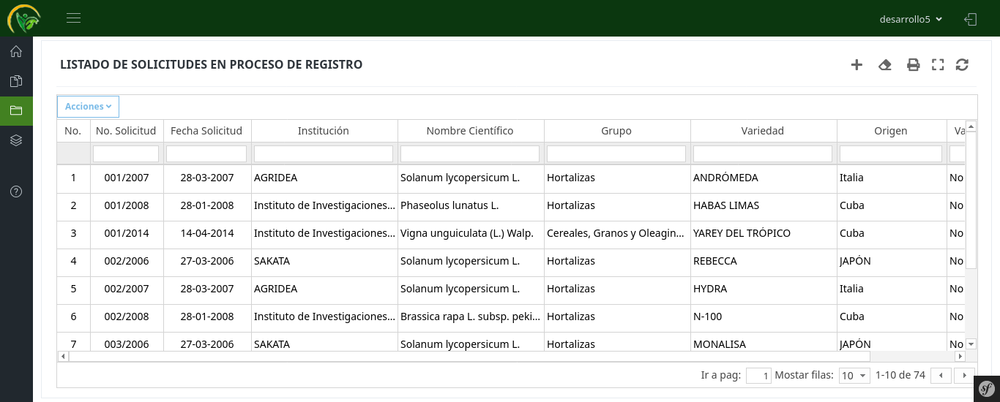
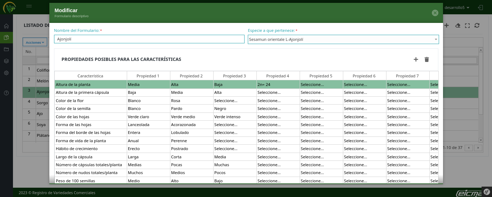
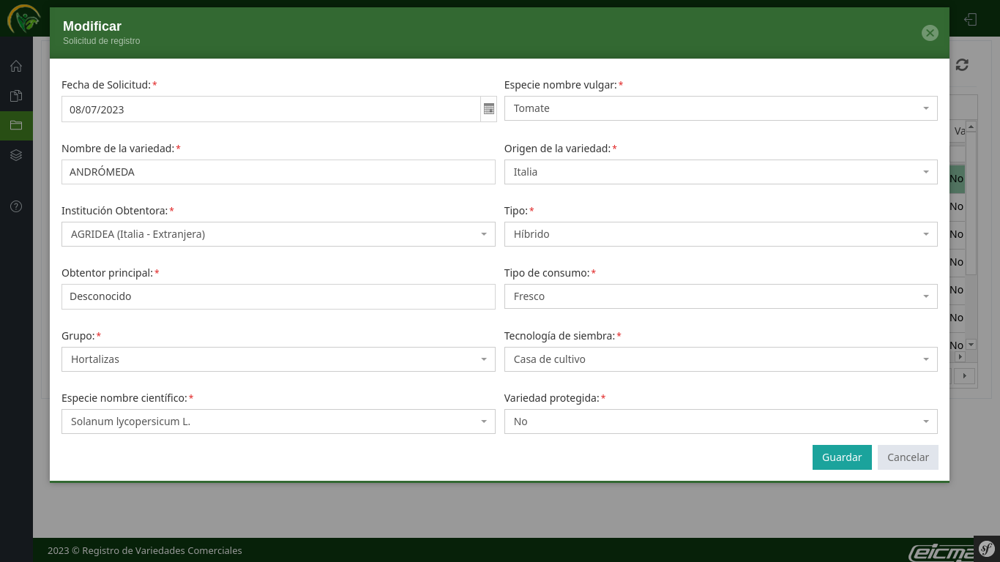
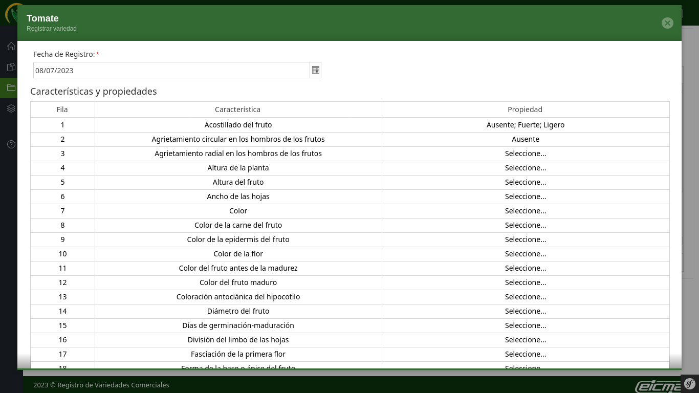
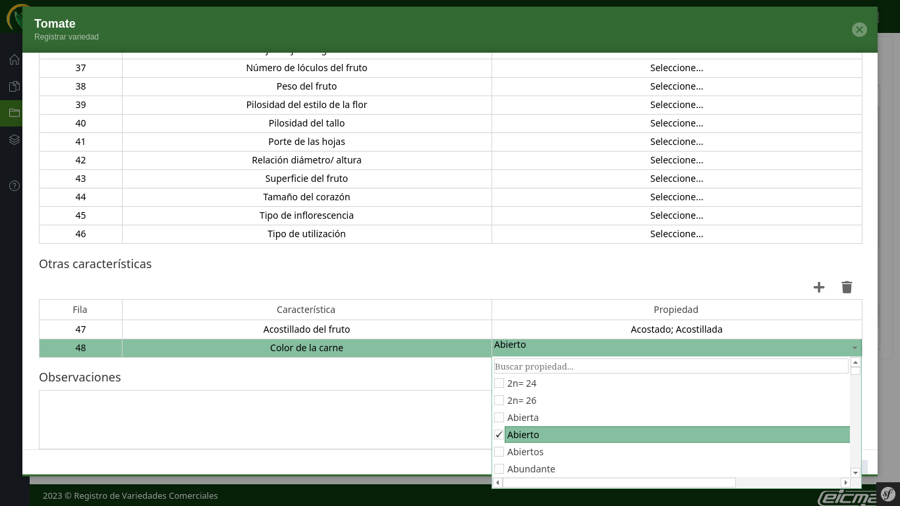
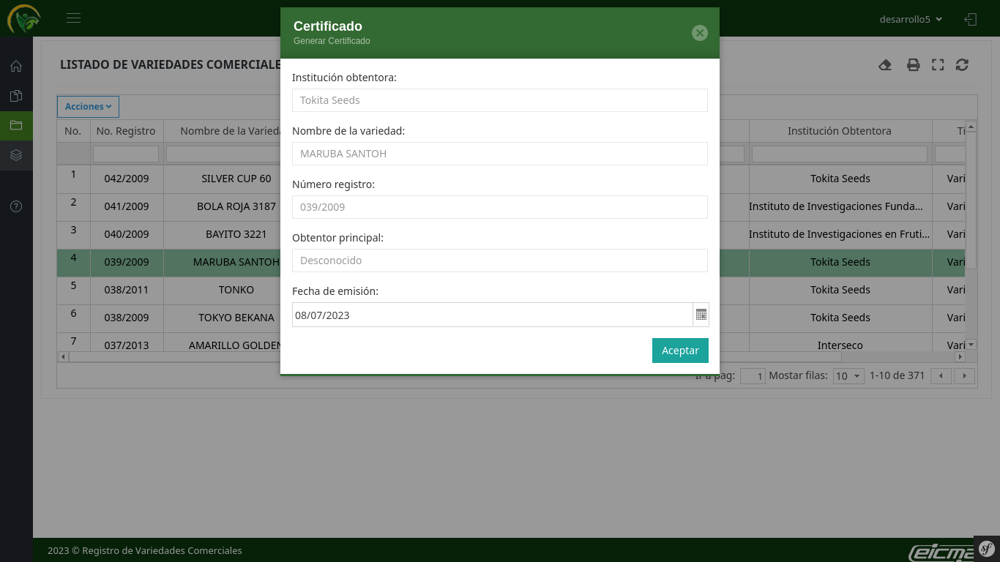

Cuban Ministry of Agriculture's Commercial Varieties Registry
- Category: Web application
- Date: Apr 2018 - Jun 2018
- Associated with: Information Technology and Communications Company of the Cuban Ministry of Agriculture (EICMA)
- Role performed: Full-Stack developer
- Technologies:
PHP
Symfony Framework
PostgreSQL
GitLab
Description
- Application developed for the Cuban Ministry of Agriculture's Directorate of Seeds and Phytogenetic Resources as part of the informatization process of the public and administrative registries of this ministry. This tool allows to manage the registration and cancellation of plant varieties approved in the national territory according to the varietal policy approved.
- Web application developed in PHP and Symfony using PostgreSQL as database. Update to a new version from an existing version, redesign of the graphical interface.